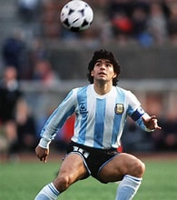

Sobre mí
Conoce más sobre mi y la pasión por el fútbol
Hola, soy Franco, un apasionado del fútbol y creador de QuieroFut. Mi objetivo es compartir mi amor por este deporte y ofrecer contenido de calidad a todos los aficionados.

Hola, soy Franco, un apasionado del fútbol y creador de QuieroFut. Mi objetivo es compartir mi amor por este deporte y ofrecer contenido de calidad a todos los aficionados.
